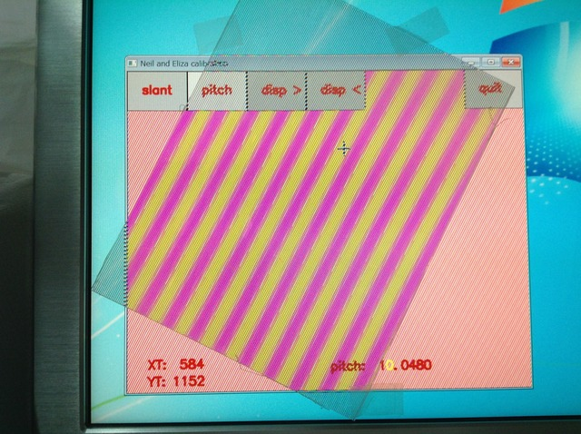

さあ、裸眼立体視ディスプレイを作ってみよう！
簡単な[つかいかた動画]を作ってみました。 参考にしてみてください。 0)レンチキュラーレンズを用意する まず何は無くとも印刷用のレンチキュラーレンズを入手します。 ネットで検索すると通信販売しているお店がいくつか見つかると思います。買いましょう。 (私は、30LPIや15LPI広視野角レンズの切り替え角が広い見え方が好きですが、 40LPI狭視野角レンズの見え方もぐっとくるものがあります。) (お店によっては『お試しなんちゃらセット』のような名称で、手頃なサイズのレンズが数種類入った商品もありますので 興味がございましたら、ぜひぜひ。) 参考： 自宅の液晶モニター(DELLの27インチ)で試してみたところ、こちらの厚いシリーズはひととおり使えました。 最近のノートPCの解像度の高いものですと、薄いシリーズでも結構いけます。 ただし、薄くなるとピントが合わなくなってくる傾向です。 (ALIENWARE 14の液晶では、200LPI以外はそれなりに見えました)1)レンチキュラーレンズを置く＆プログラムを実行する ☆どちらが先でも問題ありません。お好みで！☆ ・モニターにレンチキュラーレンズを置きます(またはテープで固定しちゃいます)。 ・プログラムを実行します。 印刷用のレンチキュラーレンズを使う場合、ギザギザのレンズ面を液晶側に向けるようにすると、 だいたいピントが合います。0コンマmmぐらい浮かすとちょうど良く場合が多いようです。 (印刷用のレンチキュラーレンズは、つるつる面にピントが合うようになってます。 液晶の場合、保護層とかの厚みがあるので、普通に置いてもピントが合いません。) 時計の短針方向で12時半〜1時ぐらいの角度／がいいようです。 モアレが見えづらくなるような角度で調整してみると良いかと思います。 反対の11時〜11時半＼でもいいのですが、実はこっち方向はちょっとバグってる気配です。 現在はやめといたほうがいいかも。
以下、2)と3)の調整は片目をつぶって行なうのがおすすめ。 2)角度を調整 ☆レンズのギザギザと線の角度を合わせます☆ [slant]ボタンをクリック(プログラム実行直後はこの状態です)。 左ボタンドラッグでラインの角度を変えて、レンズの傾きに合わせます。 カーソルキー左右[← →]、または[A,D]キーで微調整できます。
ラインがムラなく直線に見える、 もしくは視点を変えてみて(右や左から覗きこんで)、ライン全体が消えたり見えたりする状態にします。 こんなかんじ。
(辞書で引いたら"slant"って単語が出てきたんで使ってるんだけど、使い方これで合ってるのかな？)3)表示の間隔を調整 ☆視点によってピンク塗り潰しとイエロー塗り潰しがパッパッと切り替わって見える状態を目指します☆ [pitch]ボタンをクリック。 左ボタンドラッグでpitchの値を調整。 カーソルの縦位置で調整できる桁が変わります。 大きい桁から小さい桁へと合わせていくと良いです。 カーソルキー左右[← →]、または[A,D]キーで微調整できます。 最初はこんなかんじですが、
値を大きく変えていくと、こんなふうに見えてくるポイントがあります。 
小さい桁で微調整していきます。
色のムラが無くなる状態が最適位置です。
レンズが反ったりしていると、均一には見えません。 その時はしょうがないのでアバウトにいきましょう。(大丈夫、それなりに見えます) レンズを液晶面から少し浮かせるとピントが合ってクリアに見えたりします。 100円ショップの透明したじきを挟んだりするのがおすすめです。 3Dプリンターとかがあれば、積層ピッチで調整するスペーサーが作れますね。 ・適正pitch値の2倍、4倍、1/2、1/4の値でも、それなりに見えたりしますが、 適正なpitch値の場合は見えかたが鮮明になります。 ・とりあえず、適正pitchの目安にはさっちゃん電卓をお試しください☆ さっちゃん電卓は、40LPI (厚さ2.08mm)用のおおよそのpitchをさっちゃん係数を元にして計算します。 他のLPI用のおおよそのpitchも、さっちゃん電卓の結果から比率で計算できます。 ・同じモニターと同じレンズでも、レンズの傾き具合で適正なpitchは変動します。 ・適正なpitchの値は、見る距離によっても変動します。 調整中は画面に近寄っちゃいがちなのですが、 鑑賞する時の距離に合わせて調整する必要があります。 (これ、現状の裸眼立体視ディスプレイの問題点のひとつです) ちなみに、pitchの値は サブピクセル(RGBの各画素)一個がレンズ一本内の横方向に入っている個数 です。 この値の小数点以下を切り捨てた値が、 モニターとレンズ(の傾き)の組み合わせで出せる視点数の物理的な上限となります。4)画像を出してみる [disp >]ボタンをクリック。 現在の調整値に合わせた画像を表示します。ちゃんと見えるかな？
ちなみに、レンズを取るとこういう画像が表示されてます。
上の調整ができてれば、見えるはずなんですが、見えなかったら…質問ください。(mer2でぐぐれかす)ついでに： ・実行ファイルと同じ場所にある「pic」フォルダ内の多視点画像を合成しています。 ファイル名のフォーマットを合わせる必要がありますが、自前の多視点画像と差し替えることも可能です。 ファイル名フォーマットは： blender_00000_X.png blender_00000_X.jpg ・jpgかpngのみ対応 ・「X」の部分は0から始まる連番 ・連番画像ファイルの縦横は同じサイズであれば、縦横サイズは自由 となっております。同梱サンプルは32視点になってますが、差し替える場合は視点数も任意です。 それで効果があるかどうかはまだ未知数ですが、100視点だってできます。 縦横サイズや視点数が大きくなると、合成に時間がかかるようになるので注意。 うっかり視点の並びが逆の連番を作っちゃっても大丈夫、 [disp <]ボタン で逆順に合成します。 ・初期状態では表示サイズ640x512,pitch=8.0になってますが、起動オプションで各数値の初期値を変更できます。 たとえば > NaE_calib -w 480 -h 1200 -p 20.0 で表示サイズ480x1200,pitch=20.0で起動します。 縦の表示が長いほうが、傾き調整の精度が高くなりますが、表示を大きくすると処理が重くなるので注意です。 ショートカットを作ってやるのが楽かもしれません。 こんなふう：
不具合： ・上でも書いてますが、傾き11時方向側の処理がばぐっている気配。 x:1 y:3の割合の傾きだと合瀬画面が真っ暗になります。 ・傾きが垂直方向に近くなると暗く、水平方向に行くと明るくなってしまいます。 (マスクの作りが甘いようです) ・slantの調整が2ドット単位っていうのは良くない おまけ： サンプル多視点画像を作成するのに使ったBlendファイルが入っています。 Blender 2.72bで作成。 Blendファイル内には多視点画像作成スクリプトが付いてます。 詳しくはこちらをどうぞ。 簡単に： windows: C:/blender_multi Mac,Linux: ~/blender_multi を作っておく テキストエディタ上で "Alt+p" bpy.ops.object.camerra_array_set_vertical() bpy.ops.object.camerra_array_renderframe() でサンプル画像と同じものができます。 本気でモニター全画面をレンチキュラーレンズで覆いたくなったら、 こちらを参考に。 (初期状態は、27インチサイズを切り出す場合。A1サイズで1:3だと幅が少し足りなくなります。)